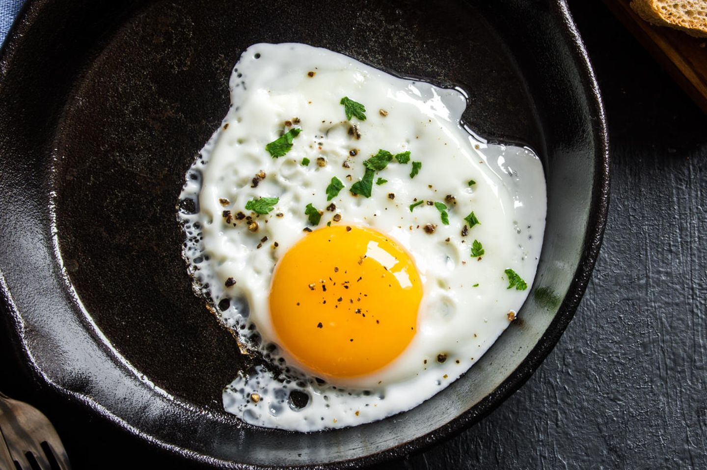

Spiegelei

Beschreibung
Spiegelei, wenn es mal schnell gehen muss
- 2 Eier
- Salz, Pfeffer
- Petersilie
Zubereitung
- Eier in eine Pfanne schlagen und bei mittlerer Temoeratur erhitzen.
- Mit Salz und Pfeffer würzen.
- Vor dem Servieren mit etwas Petersilie bestreuen.
Return to main page